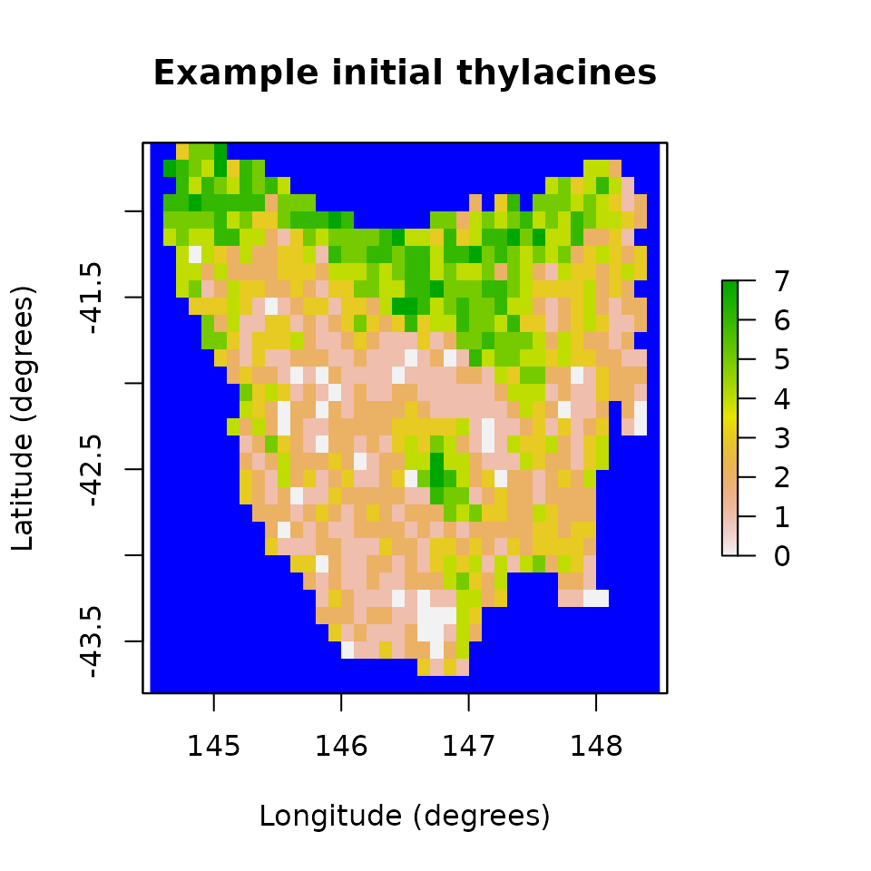
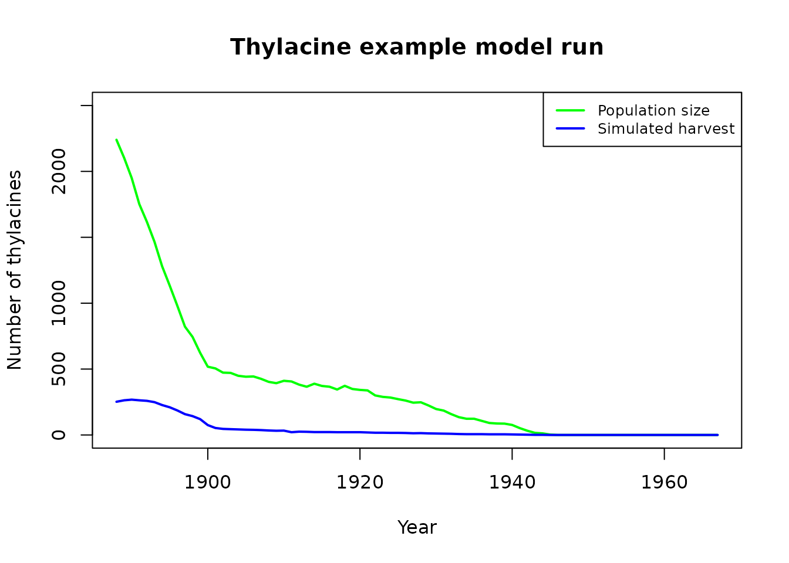
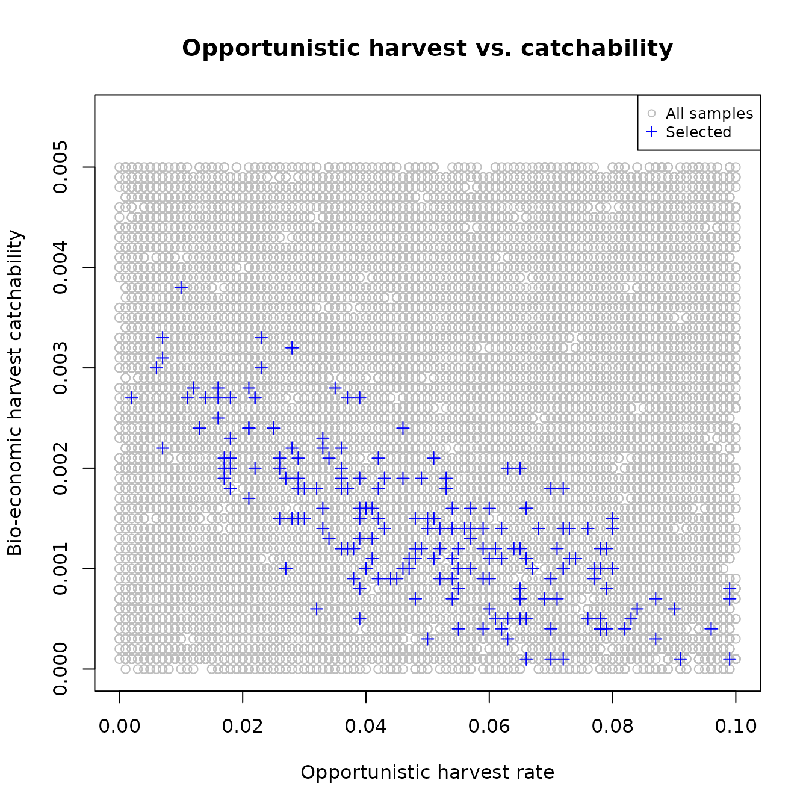

Workflow example for the Tasmanian thylacine
Global ChEC Lab
2024-04-03
Source:vignettes/thylacine_example.Rmd
thylacine_example.RmdIn this vignette we provide a more advanced example of the poems workflow using a population model of the historic decline of the thylacine in Tasmania, Australia. The thylacine was a carnivorous marsupial that declined to extinction in response to hunting and land-use change following European settlement of Australia. As well as being hunted for the exotic fur and skin trade, thylacine were also killed because they were considered a threat to livestock. A government bounty was offered for eradicated thylacine during the period 1888 until 1909 (Guiler 1985). We model these hunting and bounty dynamics using a bio-economic approach adapted from Bulte, Horan, and Shogren (2003). We build our model ensemble by selecting the simulations most congruent to expected extirpation/extinction dates and changes (regression slopes) in the number of thylacines harvested during the bounty interval. These targets are derived from historic bounty, capture and sighting records.
Setup
We begin by loading the poems package and setting our output directory. We will set a flag for running the vignette in demonstration mode (default). When set to TRUE, pre-run simulation results are loaded rather than waiting (potentially hours) to run the full sample model set. Feel free to set this flag to FALSE to run your own simulations. You may also change the number of samples generated, set the number of parallel cores available on your system, and set the simulation output directory.
Workflow
The poems workflow implements a pattern-oriented modeling (POM) approach (Grimm et al., 2005), which can be broken into six steps:
- Build the population model for the study region.
- Generate dynamic model parameters.
- Sample model and generator parameters for each simulation.
- Build a simulation manager to run each simulation.
- Build a results manager to generate summary results (metrics).
- Build a validator to select a model ensemble based on POM.
Step 1: Build the population model for the study region
We start by building a model template (using the PopulationModel class) with fixed model parameters and user-defined functions, including our bio-economic harvest function. Since our model is spatially explicit, we also need to define our study region (via the Region class).
Tasmanian study region
First, we’ll define our study region via a raster of 0.1 degree grid-cells for the majority of Tasmania, once inhabited by the thylacine. This raster of Tasmania accompanies the poems package, and may be loaded via its variable name.
# Raster of Tasmania (note: islands removed where there was no evidence of thylacine occupancy).
data(tasmania_raster)
raster::plot(tasmania_raster,
main = "Tasmania raster",
xlab = "Longitude (degrees)", ylab = "Latitude (degrees)",
colNA = "blue"
)The grid-cell size was selected as a reasonable approximation for thylacine territorial range (Guiler & Godard, 1998).
To define our region, we will use this raster of Tasmania as a template for the Region object, which will set the occupiable cell indices in the order in which they are stored in the raster.
IBRA bioregions
We partition our study region into Interim Bioregionalisation of Australia (IBRA) bioregions for several purposes. Our harvest function will distribute our simulated harvest across these IBRA bioregions. We will also use these IBRA bioregions to approximate spatial differences in habitat suitability decline. In step 6, we will use estimated extirpation dates for each IBRA bioregion when selecting our model ensemble. A raster of the approximate distribution of our study region cells across IBRA bioregions, as well as a data frame containing information about each IBRA bioregion, are included with the poems package. Here we also collate lists of indices and the number of cells for each bioregion.
# Tasmania study Interim Bioregionalisation of Australia (IBRA) bioregion cell distribution
data(tasmania_ibra_raster)
raster::plot(tasmania_ibra_raster,
main = "Tasmania study IBRA bioregions", colNA = "blue",
xlab = "Longitude (degrees)", ylab = "Latitude (degrees)"
)
data(tasmania_ibra_data)
tasmania_ibra_data # examine
#> index key abbr name
#> 1 1 A FUR Furneaux
#> 2 2 B BEN Ben Lomond
#> 3 3 C TNM Tasmanian Northern Midlands
#> 4 4 D TSE Tasmanian South East
#> 5 5 E TW Tasmanian West
#> 6 6 F TNS Tasmanian Northern Slopes
#> 7 7 G TSR Tasmanian Southern Ranges
#> 8 8 H TCH Tasmanian Central Highlands
#> 9 9 I KIN King
# Calculate cell indices and counts for IBRA bioregions
ibra_indices <- lapply(
as.list(tasmania_ibra_data$index),
function(i) {
which(tasmania_ibra_raster[region$region_indices] == i)
}
)
ibra_indices[1:2] # examine
#> [[1]]
#> [1] 13 14 15 25 26 27 28 29 30 31 44 45 46 47 48 50 52 53 54
#> [20] 55 71 72 73 74 75 76 77 78 79 85 86 87 105 106 107 108 109 110
#> [39] 124 143 161 197 198 233 234 270
#>
#> [[2]]
#> [1] 49 51 80 81 82 83 84 111 112 113 114 115 116 117 118 119 120 121 122
#> [20] 123 148 149 150 151 152 153 154 155 156 157 158 159 160 187 188 189 190 191
#> [39] 192 193 194 195 196 225 226 227 228 229 230 231 232 261 262 263 264 265 266
#> [58] 267 268 269 296 297 298 299 300 301 302 303 304 305 332 333 334 335 336 337
ibra_cells <- unlist(lapply(ibra_indices, length))
ibra_cells # examine
#> [1] 46 76 40 147 188 72 93 86 47Density dependence function
Here we create a user-defined function for density dependence utilizing the logistic approach (Ricker, 1954). Although the poems package has the Ricker logistic function as a predefined function operating at the population grid-cell level (via density_dependence = “logistic”), this was found to be inadequate for our thylacine model due to low densities of thylacine at the grid-cell level. To overcome this our density dependence function operates at a neighborhood level, where each cell’s neighborhood include its adjacent cells (thus up to 9 cells in total). This approach considers the mobility of the thylacine when calculating annual reproduction and survival rates, whereby individuals have the ability to search for mates or more suitable habitat in neighboring cells.
In order to first define our neighborhoods for our density dependence function, it is convenient to partially skip ahead to step 2 (building generators) and build our dispersal generator.
# Build the dispersal generator and calculate distance data
dispersal_gen <- DispersalGenerator$new(
region = region,
dispersal_max_distance = 50,
distance_scale = 1000, # in km
dispersal_friction = DispersalFriction$new(), # modify coastline distances
inputs = c("dispersal_p", "dispersal_b"),
decimals = 5
)
dispersal_gen$calculate_distance_data()
head(dispersal_gen$distance_data$base) # examine
#> target_pop source_pop compact_row distance_class
#> 1 2 1 1 9
#> 2 3 1 2 17
#> 3 4 1 3 26
#> 4 5 1 4 14
#> 5 6 1 5 12
#> 6 7 1 6 14We will use the generator for its dispersal functionality later, but for now we will use it to calculate distance data in order to define our neighborhoods of adjacent cells for each grid-cell. At our defined spatial resolution, adjacent cells are within 14 km from each cell.
# Define neighborhoods (of up to 9 adjacent cells) based on a 14 km range from each
# grid cell for density dependence calculations (using a dispersal generator)
distance_data <- dispersal_gen$distance_data[[1]]
nh_data <- distance_data[which(distance_data$distance_class <= 14), 2:1]
neighborhoods <- as.list(1:795)
for (i in 1:nrow(nh_data)) {
neighborhoods[[nh_data$source_pop[i]]] <- c(
neighborhoods[[nh_data$source_pop[i]]],
nh_data$target_pop[i]
)
}
neighborhoods[1:3] # examine
#> [[1]]
#> [1] 1 2 5 6 7
#>
#> [[2]]
#> [1] 2 1 3 6 7 8
#>
#> [[3]]
#> [1] 3 2 4 7 8 9We can now define our density dependence function, which is list-nested with our neighborhoods and an Allee effect (Allee, 1931) parameter. We apply a Tasmania-wide Allee effect to suppress a sustained low, non-viable population. Additional functionality is also included to prevent reproduction when a neighborhood has a single thylacine. We also define an alias to the Allee parameter so we can sample it later.
# User-defined function for Ricker logistic density dependence via neighborhoods, with
# Allee effects; also remove fecundities if single thylacine in a neighborhood
density_dependence <- list(
neighborhoods = neighborhoods,
allee = 25, # Tasmania-wide Allee effect parameter
function(params) {
# Apply logistic density dependence using neighborhoods
growth_rate_max <- params$growth_rate_max
nh_density_abundance <- unlist(lapply(
params$neighborhoods,
function(nh_indices) {
sum(params$density_abundance[nh_indices])
}
))
nh_carrying_capacity <- unlist(lapply(
params$neighborhoods,
function(nh_indices) {
sum(params$carrying_capacity[nh_indices])
}
))
occupied_indices <- params$occupied_indices
growth_rate <- growth_rate_max * (1 - (nh_density_abundance[occupied_indices] /
nh_carrying_capacity[occupied_indices]))
params$transition_array[, , occupied_indices] <-
params$apply_multipliers(
params$transition_array[, , occupied_indices],
params$calculate_multipliers(growth_rate)
)
# Apply Tasmania-wide allee effect
total_abundance <- sum(params$density_abundance)
params$transition_array <-
params$transition_array * total_abundance / (params$allee + total_abundance)
# Remove fecundities for single thylacines
single_indices <- which(nh_density_abundance == 1)
params$transition_array[, , single_indices] <-
(params$transition_array[, , single_indices] * as.vector(+(!params$fecundity_mask)))
return(params$transition_array)
}
)
density_aliases <- list(density_allee = "density_dependence$allee")Note that after calculating a modified growth rate via neighborhood abundance and carrying capacity for each cell, we utilize a lookup table (calculated at the time of simulation) so as to apply a multiplier to the stage matrix corresponding to each cell, thus modifying its equivalent growth rate appropriately.
Harvest function
Let’s now define our bio-economic harvest function, which is optionally list-nested with harvest parameters. The total (Tasmania-wide) number of thylacines harvested at each model simulation time step is calculated via the combination of a constant opportunistic harvest rate plus a bio-economic component adapted from Bulte et al. (2003). The bio-economic component simulates hunting effort based on economic return (or profit), relative to other economic alternatives. Economic hunting rewards include a bounty applied during the bounty period (1888-1909), plus an ongoing reward for pelts. It has been estimated that up to half of thylacines killed were not submitted for bounty (Guiler & Godard, 1998). We therefore include an additional parameter in our harvest model to calculate the fraction of each harvest that is submitted for bounty. Once we calculate our simulated yearly total harvest and bounty, we then distribute them across IBRA bioregions based on thylacine bioregion densities. We define aliases for the harvest/bounty parameters so we can sample them later.
# Harvest bounty (economic) model user-defined function adapted from Bulte et al. (2003).
harvest <- list(
# Function parameters (passed to function in params list)
ohr = 0.05, # opportunistic harvest rate
t1 = 1888, # first year of bounty
tb = 1909, # last year of bounty
fb = 0.75, # harvest fraction submitted for bounty
B = c(1.6, 0.6), # bounty/skin price in pounds, pre/post bounty
w = 3.5, # opportunity cost in pounds per year
E0 = 25, # effort in 1888 (no. hunters)
q = 0.0025, # catchability coefficient
v1 = 0.02, # entry rate
v2 = 0.5, # exit rate
ibra_indices = ibra_indices, # bioregion cell (row) indices
ibra_cells = ibra_cells, # number of cells in bioregions
# Function definition
bounty_function = function(params) {
# Unpack parameters (used at every time step)
ohr <- params$ohr
t1 <- params$t1
tb <- params$tb
fb <- params$fb
B <- params$B
w <- params$w
q <- params$q
v1 <- params$v1
v2 <- params$v2
ibra_indices <- params$ibra_indices
ibra_cells <- params$ibra_cells
ibra_number <- length(ibra_cells)
stages <- params$stages
populations <- params$populations
simulator <- params$simulator
tm <- params$tm
x <- params$stage_abundance
# Initialise (first time step only)
if (tm == 1) { # attach variables and access results via simulator reference object
simulator$attached$E <- params$E0 # current bounty effort
simulator$attached$vi <- v1 # current bounty rate
simulator$results$bounty <- array(0, c(ibra_number, params$time_steps))
}
# Access persistent parameters via simulator reference object
E <- simulator$attached$E
vi <- simulator$attached$vi
# Next year's hunting effort and entry/exit rates based on this year's profit
h <- max(0, round((ohr + q * E) * sum(x))) # harvest
b <- round(h * fb * ((tm + t1 - 1) <= tb)) # bounty submitted
profit <- round(B[((tm + t1 - 1) > tb) + 1] * b + B[2] * (h - b) - w * E, 1)
simulator$attached$E <- max(0, round(E + vi * profit))
simulator$attached$vi <- c(v1, v2)[(profit < 0) + 1]
# Distribute harvest and bounty across bioregions based on each IBRA density
staged_indices <- array(1:(stages * populations), c(stages, populations))
rep_indices <- unlist(apply(
matrix(staged_indices[, unlist(ibra_indices)]), 1,
function(i) rep(i, x[i])
))
distributed_h <- array(0, c(stages, populations))
if (length(rep_indices) && h > 0) {
ibra_x <- unlist(lapply(ibra_indices, function(indices) sum(x[, indices])))
rep_ibra <- unlist(apply(matrix(1:ibra_number), 1, function(i) rep(i, ibra_x[i])))
rep_prob <- 1 / ibra_cells[rep_ibra]
h_indices <- sample(1:length(rep_indices), min(h, sum(x)), prob = rep_prob)
if (b > 0) {
b_indices <- h_indices[sample(1:length(h_indices), b)]
simulator$results$bounty[, tm] <- tabulate(rep_ibra[b_indices],
nbins = ibra_number
)
}
for (i in rep_indices[h_indices]) distributed_h[i] <- distributed_h[i] + 1
}
# Return abundance
return(x - distributed_h)
}
)
harvest_aliases <- list(
harvest_ohr = "harvest$ohr", harvest_fb = "harvest$fb",
harvest_w = "harvest$w", harvest_E0 = "harvest$E0",
harvest_q = "harvest$q", harvest_v1 = "harvest$v1",
harvest_v2 = "harvest$v2"
)Template model
Finally, we can build our template model with these user-defined functions and their associated parameters, as well as other fixed model parameters.
# Population (simulation) model template for fixed parameters
model_template <- PopulationModel$new(
region = region,
time_steps = 80, # years (1888-1967)
populations = region$region_cells, # 795
# initial_abundance : generated
# stage_matrix: generated
fecundity_max = 2,
demographic_stochasticity = TRUE,
# carrying_capacity : generated
density_dependence = density_dependence, # user-defined
harvest = harvest, # user-defined
# dispersal : generated
dispersal_target_k = 0.5,
dispersal_target_n = list(threshold = 4, cutoff = 8),
simulation_order = c("results", "harvest", "transition", "dispersal"),
results_selection = c("abundance", "harvested"),
attribute_aliases = c(density_aliases, harvest_aliases)
)Note the use of thresholds/cutoffs for dispersal target carrying capacities and abundances. The former suppress dispersal to cells with near-zero suitability, whereas the latter prevent model thylacines from overcrowding cells. When overridden, the simulation order may allow the initial abundance to be included in the results. Also note the commented placeholders for model parameters that will be sampled or generated.
Step 2: Build generators for dynamically generating model parameters
Here we build a generator for combined model initial abundance and carrying capacity, as well as a generator for generating a stage matrix for each sampled model based on sampled growth rate. We will test our generators, including our pre-built dispersal generator (from part 1), by generating some example outputs.
Initial habitat suitability
Firstly, our initial abundance and carrying capacity generator utilizes the habitat suitability for our study region. The initial habitat suitability was derived from a species distribution model (SDM) for the thylacine. The initial habitat suitability raster has also been included with the poems package.
Habitat decline
Bulte et al. (2003) estimated a 3% per annum Tasmania-wide decline in thylacine habitat suitability due to human land use. To approximate spatial differences in decline, we approximate the decline in thylacine habitat suitability by applying a constant annual decline to all IBRA bioregions except Tasmanian West (5) and Central Highlands (8), which have mostly retained natural ecosystems.
Initial abundance and carrying capacity generator
We will utilize Generator class functionality for creating user-defined (template) functions to generate initial abundance and carrying capacity (outputs). The functions will use the initial habitat suitability and spatial distribution of habitat decline, along with sampled values (inputs) for initial carrying capacity, percentage decline (in 7/9 IBRA bioregions), and the fraction of capacity for initial abundance (phi).
# Build a carrying capacity generator model based on habitat suitability and sampled
# initial capacity, initial fraction (phi), & decline rate per year in selected bioregions.
capacity_gen <- Generator$new(
description = "capacity",
time_steps = 80, # years (1888-1967)
initial_hs = thylacine_hs_raster[region$region_indices],
decline_indices = which(!tasmania_ibra_raster[region$region_indices] %in% c(5, 8)),
inputs = c("k_init", "k_decline", "k_phi"),
outputs = c("initial_abundance", "carrying_capacity"),
generative_requirements = list(
initial_abundance = "function",
carrying_capacity = "function"
)
)
capacity_gen$add_function_template(
"initial_abundance",
function_def = function(params) {
distr_k <- round(params$initial_hs / sum(params$initial_hs) * params$k_init)
a_init <- round(params$k_init * params$k_phi) # total initial
distr_a <- array(0, length(distr_k))
rep_indices <- unlist(apply(
matrix(1:length(distr_k)), 1,
function(i) rep(i, distr_k[i])
))
sample_indices <- rep_indices[sample(
1:length(rep_indices),
min(a_init, length(rep_indices))
)]
for (i in sample_indices) distr_a[i] <- distr_a[i] + 1
return(distr_a)
},
call_params = c("initial_hs", "k_init", "k_phi")
)
capacity_gen$add_function_template(
"carrying_capacity",
function_def = function(params) {
distr_k <- params$initial_hs / sum(params$initial_hs) * params$k_init
decline_matrix <- array(1, c(length(distr_k), params$time_steps))
decline_matrix[params$decline_indices, ] <-
matrix((1 - params$k_decline)^(0:(params$time_steps - 1)),
nrow = length(params$decline_indices), ncol = params$time_steps,
byrow = TRUE
)
return(distr_k * decline_matrix)
},
call_params = c(
"initial_hs", "time_steps", "decline_indices",
"k_init", "k_decline"
)
)We can test our generator with some example (mid-value) sample inputs and examine plots of the output initial abundance and carrying capacity (final).
# Generate example initial abundance and declining carrying capacity time-series
generated_k <- capacity_gen$generate(input_values = list(
k_init = 2800,
k_decline = 0.04,
k_phi = 0.8
))
example_initial_abundance <- generated_k$initial_abundance
example_carrying_capacity <- generated_k$carrying_capacity
# Plot the example initial abundance
example_initial_n_raster <- region$region_raster
example_initial_n_raster[region$region_indices] <- example_initial_abundance
raster::plot(example_initial_n_raster,
main = "Example initial thylacines",
colNA = "blue", xlab = "Longitude (degrees)", ylab = "Latitude (degrees)"
)
# Plot the example final carrying capacity
example_final_raster <- region$region_raster
example_final_raster[region$region_indices] <- example_carrying_capacity[, 80]
raster::plot(example_final_raster,
main = "Final thylacine carrying capacity",
colNA = "blue", xlab = "Longitude (degrees)", ylab = "Latitude (degrees)",
zlim = c(0, 8)
)Stage matrix generator
Our stage matrix generator adjusts our original stage matrix so that its equivalent (simple) growth rate (lambda - 1) is that of a sampled input rate.
# Build a stage matrix generator based on sampled growth rate
stage_matrix_gen <- Generator$new(
description = "stage matrix",
base_matrix = matrix(c(
0.00, 0.57, 1.17,
0.50, 0.00, 0.00,
0.00, 0.80, 0.80
), nrow = 3, ncol = 3, byrow = TRUE),
inputs = c("growth_r"),
outputs = c("stage_matrix"),
generative_requirements = list(stage_matrix = "function")
)
stage_matrix_gen$add_function_template(
"stage_matrix",
function_def = function(params) {
return(params$base_matrix * (1 + params$growth_r) /
Re((eigen(params$base_matrix)$values)[1]))
},
call_params = c("base_matrix", "growth_r")
)We can test our generator with an example (mid-value) sample input growth rate of 0.25 (lambda = 1.25).
# Generate sampled stage matrix for growth rate: lambda = 1.25
gen_stage_m <- stage_matrix_gen$generate(input_values = list(growth_r = 0.25))
gen_stage_m # examine
#> $stage_matrix
#> [,1] [,2] [,3]
#> [1,] 0.0000000 0.5923549 1.2158863
#> [2,] 0.5196095 0.0000000 0.0000000
#> [3,] 0.0000000 0.8313752 0.8313752Dispersal generator
We already built our dispersal generator in step 1, so as to use it to calculate neighborhood distances for density dependence. Our distance-based dispersal generator will use sampled values for the dispersal proportion (p) and breadth (b) parameters, which are described in the generator’s help documentation (?DispersalGenerator). We will now use it to generate some example dispersal data, based on our best estimates for the p and b parameters.
# Generate sampled dispersals for p = 0.5, b = 7 (km)
sample_dispersal_data <- dispersal_gen$generate(
input_values = list(dispersal_p = 0.5, dispersal_b = 7)
)$dispersal_data
head(sample_dispersal_data[[1]]) # examine
#> target_pop source_pop emigrant_row immigrant_row dispersal_rate
#> 1 2 1 1 1 0.13164
#> 2 3 1 2 1 0.04198
#> 3 4 1 3 1 0.01161
#> 4 5 1 4 1 0.06444
#> 5 6 1 5 1 0.08576
#> 6 7 1 6 1 0.06444Example model run
Before proceeding to step 3 to setup multiple model simulations, let’s run our model with its fixed parameter values, those initially set in our user-defined density dependence and harvest functions, along with our generated example initial abundance, carrying capacity, stage matrix, and dispersal data. We will do this by cloning our model template and setting our example parameters before running the population simulator.
# Run the model with example parameters
model <- model_template$clone()
model$set_attributes(
initial_abundance = example_initial_abundance,
carrying_capacity = example_carrying_capacity,
stage_matrix = gen_stage_m$stage_matrix,
dispersal = sample_dispersal_data
)
results <- population_simulator(model) # run poems simulator
# Plot the total abundance and number harvested
plot(
x = 1888:1967, y = results$all$abundance, xlab = "Year",
ylab = "Number of thylacines", main = "Thylacine example model run",
ylim = c(0, 2500), type = "l", col = "green", lwd = 2
)
lines(x = 1888:1967, y = results$all$harvested, lty = 1, col = "blue", lwd = 2)
legend("topright",
legend = c("Population size", "Simulated harvest"),
col = c("green", "blue"), lty = c(1, 1), lwd = 2, cex = 0.8
)
Step 3: Sample model and generator parameters for each simulation
In order to explore the model parameter space to find the best models, we will now generate 20,000 Latin hypercube samples of model and generator parameters using the LatinHypercubeSampler class. We’ll sample each parameter from uniform distributions across parameter ranges derived from Bulte et al. (2003), and via model trial runs.
# Create a LHS object
lhs_gen <- LatinHypercubeSampler$new()
# Set capacity and growth parameters (as per Bulte et al., 2003)
lhs_gen$set_uniform_parameter("k_init", lower = 2100, upper = 3500, decimals = 0)
lhs_gen$set_uniform_parameter("k_decline", lower = 0.03, upper = 0.05, decimals = 3)
lhs_gen$set_uniform_parameter("k_phi", lower = 0.6, upper = 1.0, decimals = 2)
lhs_gen$set_uniform_parameter("growth_r", lower = 0.1875, upper = 0.3125, decimals = 2)
# Set density dependence allee effect parameter
lhs_gen$set_uniform_parameter("density_allee", lower = 0, upper = 50, decimals = 1)
# Set bio-economic harvest parameters (as per Bulte et al., 2003)
lhs_gen$set_uniform_parameter("harvest_ohr", lower = 0, upper = 0.1, decimals = 3)
lhs_gen$set_uniform_parameter("harvest_fb", lower = 0.5, upper = 1.0, decimals = 2)
lhs_gen$set_uniform_parameter("harvest_w", lower = 2.625, upper = 4.375, decimals = 1)
lhs_gen$set_uniform_parameter("harvest_E0", lower = 18.75, upper = 31.25, decimals = 0)
lhs_gen$set_uniform_parameter("harvest_q", lower = 0, upper = 0.005, decimals = 4)
lhs_gen$set_uniform_parameter("harvest_v1", lower = 0.015, upper = 0.025, decimals = 3)
lhs_gen$set_uniform_parameter("harvest_v2", lower = 0.375, upper = 0.625, decimals = 3)
# Set new spatial parameters for dispersal
lhs_gen$set_uniform_parameter("dispersal_p", lower = 0.3, upper = 0.7, decimals = 2)
lhs_gen$set_uniform_parameter("dispersal_b", lower = 4, upper = 10, decimals = 1)
# Generate samples
sample_data <- lhs_gen$generate_samples(number = SAMPLES, random_seed = 123)
head(sample_data) # examine
#> k_init k_decline k_phi growth_r density_allee harvest_ohr harvest_fb
#> 1 3451 0.050 0.67 0.27 46.1 0.016 0.64
#> 2 3208 0.048 0.80 0.28 1.0 0.052 0.50
#> 3 2375 0.033 0.96 0.29 30.9 0.072 0.76
#> 4 2733 0.042 0.87 0.25 23.5 0.057 0.63
#> 5 3048 0.040 0.64 0.19 46.4 0.074 0.74
#> 6 3250 0.031 0.76 0.21 38.5 0.081 0.99
#> harvest_w harvest_E0 harvest_q harvest_v1 harvest_v2 dispersal_p dispersal_b
#> 1 3.3 30 0.0025 0.020 0.555 0.59 5.5
#> 2 2.9 23 0.0009 0.017 0.534 0.33 5.1
#> 3 3.8 29 0.0023 0.019 0.406 0.68 8.1
#> 4 4.0 26 0.0008 0.017 0.510 0.54 4.8
#> 5 3.1 21 0.0049 0.019 0.444 0.54 5.0
#> 6 2.9 24 0.0021 0.016 0.463 0.57 6.7
dim(sample_data) # dimensions
#> [1] 20000 14Step 4: Build a simulation manager to run each simulation
We will now setup a SimulationManager class to manage the simulation of each set (or row) of sampled parameters. In demonstration mode we will only run the simulations for the first two samples. The poems package provides example simulation summary data for all 20,000 samples (which is used in our model ensemble selection and validation).
# Build the simulation manager
sim_manager <- SimulationManager$new(
sample_data = sample_data,
model_template = model_template,
generators = list(capacity_gen, stage_matrix_gen, dispersal_gen),
parallel_cores = PARALLEL_CORES,
results_dir = OUTPUT_DIR
)
# Run the simulations
if (DEMONSTRATION) {
sim_manager$sample_data <- sample_data[1:2, ]
}
run_output <- sim_manager$run()
run_output$summary
#> [1] "2 of 2 sample models ran and saved results successfully"
if (DEMONSTRATION) {
dir(OUTPUT_DIR, "*.RData") # includes 2 result files
}
#> [1] "sample_1_results.RData" "sample_2_results.RData"
dir(OUTPUT_DIR, "*.txt") # plus simulation log
#> [1] "simulation_log.txt"Note that the output directory contains a R-data result files for each sample simulation and a simulation log file.
Step 5: Build a results manager to generate summary results (metrics)
We will now collate summary result metrics for each of our simulations using the ResultsManager class. Here we will generate three metrics: 1. Regression slopes of total bounty submitted over three time intervals. 1. Estimated IBRA bioregion extirpation dates. 1. Estimated Tasmania-wide extinction date. The metrics (and any desired summary matrices) are calculated via user-defined functions operating on, or direct attributes of, PopulationResults class objects.
Using the PopulationResults class
To setup and test our summary metric functions, we can load the results from our example simulation run into a PopulationResults class object. A time-series of IBRA bioregion bounty values are attached to our results via our harvest function. This can be used to calculate the regression slopes for specified intervals. To obtain a time-series of bioregion abundance values, we can include the bioregion cell indices in our result class object (as an attachment). We can then use this to calculate a time-series of abundance for each bioregion, and thus calculate extirpation times for each bioregion. We will use PopulationResults functionality for calculating population (cell) abundance slopes (trends) and extirpations via result object cloning. Our clones will instead be initialized with the bounty or bioregion abundance values. The Tasmania-wide extinction time is directly available from the results object.
# Load our results (list) into a PopulationResults object
p_results <- PopulationResults$new(
results = results,
ibra_indices = ibra_indices
)
# Summary metrics for IBRA bioregions and Tasmania-wide extinction
ibra_bounty <- p_results$get_attribute("bounty") # saved in harvest function
ibra_bounty_clone <- p_results$new_clone(
results = list(abundance = ibra_bounty),
trend_interval = (1888:1894) - 1887
)
ibra_bounty_clone$all$abundance_trend # 1888-1894 total bounty slope
#> [1] -4
ibra_abundance <- t(array(unlist(lapply(
p_results$get_attribute("ibra_indices"),
function(indices) {
colSums(p_results$abundance[indices, ])
}
)), c(80, 9)))
ibra_abundance_clone <- p_results$new_clone(results = list(abundance = ibra_abundance))
(1888:1967)[ibra_abundance_clone$extirpation] # IBRA extirpation
#> [1] 1925 1927 1921 1934 1935 1932 1933 1934 1932
(1888:1967)[p_results$all$extirpation] # total extinction
#> [1] 1935Generating summary metrics and matrices
Once we’re happy with how to derive our summary metrics (and matrices) via the PopulationResults class, we can setup our results manager to generate the metrics and matrix (rows) for each sample simulation results (file). Note that passing the simulation manager when initializing the results manager copies the previous setup (sample data, output directory, etc.).
Our bounty regression slope and IBRA bioregion extirpation metrics can be combined into single metrics by calculating the square root of the mean square error (RMSE) of the simulated metrics from known or derived target values, or confidence intervals (CI), for each time interval or bioregion. Thus our targets for each of these RMSE metrics (in step 6) will be zero. We can calculate these combined (RMSE) metrics using our results manager by including (or attaching) the target values/CI to our results object. However, if we wish to retain flexibility in how we combine our individual metrics, or how we deal with NA values (e.g. no extirpation) in step 6, we can alternatively store our metrics for each slope interval or bioregion in generated matrix rows and calculate the difference with targets later. Here we will demonstrate both approaches, although the matrix approach requires more disk space.
In demonstration mode, we will again only generate metrics for the first two samples. We will load pre-generated example summaries for all 20,000 sample simulations, provided with the poems package prior to our validation and ensemble selection (in step 6).
# Set targets for our summary metrics (used to calculate combined metric errors)
slope_intervals <- c("1888-1894", "1895-1901", "1902-1909")
targets <- list(
bounty_slope = array(c(2.36, 3.25, -17.71), dimnames = list(slope_intervals)),
ibra_extirpation = array(
c(
c(NA, NA), c(1934, 1934), c(1912, 1919), c(1921, 1940),
c(1936, 1938), c(1935, 1935), c(1934, 1942),
c(1934, 1934), c(1932, 1932)
), c(2, 9),
dimnames = list(c("lower", "upper"), tasmania_ibra_data$abbr)
),
total_extinction = c(lower = 1936, upper = 1942) # CI
)
# Create a results manager for summary metrics and matrices
results_manager <- ResultsManager$new(
simulation_manager = sim_manager,
simulation_results = PopulationResults$new(
ibra_indices = ibra_indices, # attachments
targets = targets,
extirp_NA_replace = 1968
),
result_attachment_functions = list( # attached for multiple use
bounty_slope = function(results) { # via results object cloning
bounty_slope <- array(NA, 3)
ibra_bounty <- results$get_attribute("bounty") # saved in harvest function
ibra_bounty_clone <- results$new_clone(
results = list(abundance = ibra_bounty),
trend_interval = (1888:1894) - 1887
)
bounty_slope[1] <- ibra_bounty_clone$all$abundance_trend
ibra_bounty_clone <- results$new_clone(
results = list(abundance = ibra_bounty),
trend_interval = (1895:1901) - 1887
)
bounty_slope[2] <- ibra_bounty_clone$all$abundance_trend
ibra_bounty_clone <- results$new_clone(
results = list(abundance = ibra_bounty),
trend_interval = (1902:1909) - 1887
)
bounty_slope[3] <- ibra_bounty_clone$all$abundance_trend
bounty_slope
},
ibra_extirpation = function(results) { # via results object cloning
ibra_abundance_clone <- results$new_clone(results = list(
abundance = t(array(unlist(lapply(
results$get_attribute("ibra_indices"),
function(indices) {
colSums(results$abundance[indices, ])
}
)), c(80, 9)))
))
(1888:1967)[ibra_abundance_clone$extirpation]
}
),
summary_metrics = c(
"bounty_slope_error", "ibra_extirpation_error",
"total_extinction"
),
summary_matrices = c(
"extirpation", "total_bounty", "ibra_bounty",
"bounty_slope", "ibra_extirpation"
),
summary_functions = list(
# Summary metrics
bounty_slope_error = function(results) { # RMSE
sqrt(mean((results$get_attribute("targets")$bounty_slope -
results$get_attribute("bounty_slope"))^2))
},
ibra_extirpation_error = function(results) { # RMSE with NAs replaced
ibra_extirpation <- results$get_attribute("ibra_extirpation")
ibra_extirpation[is.na(ibra_extirpation)] <-
results$get_attribute("extirp_NA_replace")
target_CI <- results$get_attribute("targets")$ibra_extirpation
sqrt(mean(
((ibra_extirpation < target_CI[1, ]) * (ibra_extirpation - target_CI[1, ]) +
(ibra_extirpation > target_CI[2, ]) * (ibra_extirpation - target_CI[2, ]))^2,
na.rm = TRUE
))
},
total_extinction = function(results) {
(1888:1967)[results$all$extirpation]
},
# Summary matrices
extirpation = function(results) { # for later use
(1888:1967)[results$extirpation]
},
total_bounty = function(results) { # for later use
colSums(results$get_attribute("bounty"))
},
ibra_bounty = function(results) { # for later use
rowSums(results$get_attribute("bounty"))
},
bounty_slope = function(results) { # calculate RMSE later
results$get_attribute("bounty_slope")
},
ibra_extirpation = function(results) { # calculate RMSE later
results$get_attribute("ibra_extirpation")
}
),
parallel_cores = PARALLEL_CORES
)
# Generate the summary metrics and matrices
gen_output <- results_manager$generate()
gen_output$summary
#> [1] "2 of 2 summary metrics/matrices generated from sample results successfully"
dir(OUTPUT_DIR, "*.txt") # plus generation log
#> [1] "generation_log.txt" "simulation_log.txt"
summary_metric_data <- results_manager$summary_metric_data
summary_matrix_list <- results_manager$summary_matrix_list
head(summary_metric_data) # examine
#> index bounty_slope_error ibra_extirpation_error total_extinction
#> 1 1 8.009511 18.54724 1957
#> 2 2 9.746232 29.43850 NA
lapply(summary_matrix_list, dim) # dimensions
#> $extirpation
#> [1] 2 795
#>
#> $total_bounty
#> [1] 2 80
#>
#> $ibra_bounty
#> [1] 2 9
#>
#> $bounty_slope
#> [1] 2 3
#>
#> $ibra_extirpation
#> [1] 2 9
head(summary_matrix_list$bounty_slope) # examine
#> [,1] [,2] [,3]
#> [1,] 1.5 -7.5 -8.983333
#> [2,] -0.5 -3.0 -2.291667
head(summary_matrix_list$ibra_extirpation) # examine
#> [,1] [,2] [,3] [,4] [,5] [,6] [,7] [,8] [,9]
#> [1,] 1943 1951 1946 1947 1957 1954 1951 1955 1953
#> [2,] 1945 1952 1955 1954 NA NA NA NA NANote that the summary matrix list collates the specified result for each simulation on a single row of each matrix. Thus the columns in the extirpation matrix represent the extirpation time for each population cell, the columns in the total bounty and IBRA bounty matrices represent the total bounty at each of the 80 simulation time steps, and for each IBRA bioregion respectively. Similarly, the columns in the bounty slope matrix represent regression slopes for each of the three time intervals, and the IBRA extirpation matrix has a column for each of our nine bioregions.
Summary metric refinement
We can now collate and refine the summary metrics that we wish to utilize in our validation and ensemble model selection (in step 6). Although we have already calculated RMSE metrics for our bounty regression slopes and IBRA extirpation dates, we could refine these by utilizing their uncombined values in the corresponding matrices. Here we will reproduce these metrics for our two samples for demonstration purposes (in demonstration mode), before loading the full pre-generated example metrics summary set. We will also calculate the error from the target confidence interval (CI) for our simulated total extinction dates for our full metrics set.
# Demonstrate calculating RMSE metrics from matrices
if (DEMONSTRATION) { # Calculate RMSE for bounty slopes
bounty_slope_error2 <- sqrt(rowMeans((summary_matrix_list$bounty_slope -
matrix(targets$bounty_slope,
nrow = 2,
ncol = 3, byrow = TRUE
))^2))
cbind(
bounty_slope_error = summary_metric_data$bounty_slope_error,
bounty_slope_error2
) # examine
}
#> bounty_slope_error bounty_slope_error2
#> [1,] 8.009511 8.009511
#> [2,] 9.746232 9.746232
if (DEMONSTRATION) { # Calculate RMSE for IBRA extirpation
ibra_extirpation <- summary_matrix_list$ibra_extirpation
ibra_extirpation[is.na(ibra_extirpation)] <- 1968
target_CI <- array(targets$ibra_extirpation, c(dim(targets$ibra_extirpation), 2))
ibra_extirpation_error2 <- sqrt(rowMeans(
((ibra_extirpation < t(target_CI[1, , ])) * (ibra_extirpation - t(target_CI[1, , ])) +
(ibra_extirpation > t(target_CI[2, , ])) * (ibra_extirpation - t(target_CI[2, , ])))^2,
na.rm = TRUE
))
cbind(
ibra_extirpation_error = summary_metric_data$ibra_extirpation_error,
ibra_extirpation_error2
) # examine
}
#> ibra_extirpation_error ibra_extirpation_error2
#> [1,] 18.54724 18.54724
#> [2,] 29.43850 29.43850
# Load full example metrics
if (DEMONSTRATION) {
data(thylacine_example_metrics)
dim(thylacine_example_metrics) # dimensions
summary_metric_data <- thylacine_example_metrics
}
# Calculate the error from the CI of total extinction
extinct <- summary_metric_data$total_extinction
target_CI <- targets$total_extinction
summary_metric_data$total_extinction_error <-
((extinct < target_CI[1]) * (extinct - target_CI[1]) +
(extinct > target_CI[2]) * (extinct - target_CI[2]))
head(summary_metric_data) # examine
#> index bounty_slope_error ibra_extirpation_error total_extinction
#> 1 1 11.66632 22.597013 1961
#> 2 2 10.00490 31.334885 NA
#> 3 3 17.04603 9.480243 1925
#> 4 4 10.35301 25.763346 NA
#> 5 5 20.13609 31.040296 1902
#> 6 6 21.62111 22.605309 1913
#> total_extinction_error
#> 1 19
#> 2 NA
#> 3 -11
#> 4 NA
#> 5 -34
#> 6 -23Here we could have also replaced NA values, those indicating that a population persisted, when calculating the error of the total extinction date (from the target CI), however we will defer this so as to demonstrate NA replacement functionality in the validator in the next step.
Step 6: Build a validator to select a model ensemble
We will now validate and select our model ensemble via the Validator class, which by default utilizes an approximate Bayesian computation (ABC) approach (Beaumont, Zhang, & Balding, 2002) provided by the abc library (Csillery et al., 2015). We will use the default configuration to select the best 200 models (via a tolerance of 0.01). Our targets for selecting the best models will be zero for our RMSE metrics for bounty slope, IBRA extirpation, and total extinction. Note that for models where our simulated thylacine persist until the end of the simulation (1967), the total extinction value will be NA. Since the abc function requires finite values only, we will use the non_finite_replacements attribute of the validator to replace these NA values with the RMSE (based on target CI) corresponding to 1968. Stronger penalties could be applied if desired.
Note that the validator generates diagnostics (as per the abc documentation) as a PDF file in the configured output directory. We can configure this directory, because locating the default output directory generated via tempdir() can be tedious.
# Create a validator for selecting the 'best' example models
validator <- Validator$new(
simulation_parameters = sample_data,
simulation_summary_metrics = summary_metric_data[c(
"bounty_slope_error",
"ibra_extirpation_error",
"total_extinction_error"
)],
observed_metric_targets = c(
bounty_slope_error = 0,
ibra_extirpation_error = 0,
total_extinction_error = 0
),
non_finite_replacements = list(total_extinction_error = function(x) {
(1968 - targets$total_extinction[2])
}),
output_dir = OUTPUT_DIR
)
suppressWarnings(validator$run(
tolerance = 0.01, sizenet = 1, lambda = 0.0001,
output_diagnostics = TRUE
))
#> 12345678910
#> 12345678910
dir(OUTPUT_DIR, "*.pdf") # plus validation diagnostics (see abc library documentation)
#> [1] "validation_diagnostics.pdf"
head(validator$selected_simulations) # examine
#> index weight
#> 1 93 0.02871514
#> 2 99 0.08332668
#> 3 164 0.21062364
#> 4 248 0.11186737
#> 5 309 0.43248925
#> 6 337 0.15984413
dim(validator$selected_simulations) # dimensions
#> [1] 200 2
selected_indices <- validator$selected_simulations$index
selected_weights <- validator$selected_simulations$weightNote that each selected model (via its index in the sample data frame) have a corresponding weight value, which is indicative of the congruence between each model’s summary metrics and the corresponding target patterns.
Selected model ensemble
Now that we have selected our model ensemble we can examine:
- how well our simulations did in hitting validation targets;
- which model parameters were most influential in our ensemble selection; and
- the impact of model stochasticity on our ensemble selection.
We can also verify our model via historic bounty record data not explicitly utilized in our validation and model selection.
Lastly, we can use our model ensemble to examine the spatio-temporal extirpation pattern of our simulated thylacine decline.
Model ensemble summary metrics
To examine how well our individual (uncombined) metric targets have been matched, let’s now plot the distributions of our summary metrics of our selected model ensemble, as well as those of the full 20,000 model simulations.
When in demonstration mode, we will load pre-generated example matrices, provided with the poems package, containing bounty slope and IBRA bioregion extirpations for all 20,000 sample simulations. The example matrices also include cell extirpation dates, and a time-series and IBRA distribution of total bounty, which we will use later.
# Load pre-generated example matrices
if (DEMONSTRATION) {
data(thylacine_example_matrices)
summary_matrix_list <- thylacine_example_matrices
} else { # cell extirpation and total/ibra bounty for selected samples only
summary_matrix_list$extirpation <- summary_matrix_list$extirpation[selected_indices, ]
summary_matrix_list$total_bounty <- summary_matrix_list$total_bounty[selected_indices, ]
summary_matrix_list$ibra_bounty <- summary_matrix_list$ibra_bounty[selected_indices, ]
}
lapply(summary_matrix_list, dim) # dimensions
#> $extirpation
#> [1] 200 795
#>
#> $total_bounty
#> [1] 200 80
#>
#> $ibra_bounty
#> [1] 200 9
#>
#> $bounty_slope
#> [1] 20000 3
#>
#> $ibra_extirpation
#> [1] 20000 9
# Plot the simulation, targets, and selected metrics for bounty slopes
bounty_slope <- summary_matrix_list$bounty_slope
colnames(bounty_slope) <- slope_intervals
graphics::boxplot(bounty_slope,
border = rep("gray", 3), outline = FALSE, range = 0,
col = NULL, ylim = c(-35, 20), main = "Thylacine bounty slope",
xlab = "Slope interval (years)", ylab = "Bounty regression slope"
)
graphics::boxplot(cbind(bounty_slope[selected_indices, ], NA), # NA for relative width
border = rep("blue", 3), width = c(rep(0.5, 3), 1), outline = FALSE,
range = 0, add = TRUE, col = NULL
)
graphics::points(x = 1:3, y = targets$bounty_slope, col = "red", pch = 15)
legend("topright", c("All", "Target", "Selected"),
fill = c("gray", "red", "blue"),
border = NA, cex = 0.8
)From this plot we see that bounty slopes from all 20,000 sample models do not all align well with our bounty slope targets, however, bounty slopes from some models do reasonably well at matching targets. These are the models that have been selected. Generally, the distribution of our full sample set does not facilitate model congruence with the targets, suggesting that our harvest function may be inadequate for generating the expected temporal contour of the total thylacine bounty. This inadequacy becomes clearer later, when we plot the total bounty across time for our model ensemble.
# Plot the simulation, targets, and selected metrics for extirpation
extirpation <- cbind(
summary_matrix_list$ibra_extirpation,
summary_metric_data$total_extinction
)
colnames(extirpation) <- c(as.character(tasmania_ibra_data$abbr), "Total")
graphics::boxplot(extirpation[, 10:1],
border = rep("gray", 3), horizontal = TRUE,
outline = FALSE, range = 0, col = NULL, ylim = c(1888, 1968),
main = "Thylacine model IBRA extirpation and total extinction",
xlim = c(0.5, 11), xlab = "Extirpation/extinction time (year)",
ylab = "IBRA bioregion/Tasmania-wide total"
)
graphics::boxplot(cbind(extirpation[selected_indices, 10:1], NA),
horizontal = TRUE,
ylim = c(1888, 1968), border = rep("blue", 10),
width = c(rep(0.5, 10), 1), outline = FALSE, range = 0,
add = TRUE, col = NULL
)
for (i in 1:9) {
graphics::points(
x = targets$ibra_extirpation[, i], y = rep(11 - i, 2),
col = "red", pch = 15
)
graphics::lines(
x = targets$ibra_extirpation[, i], y = rep(11 - i, 2),
col = "red", lwd = 2
)
}
graphics::points(x = targets$total_extinction, y = c(1, 1), col = "red", pch = 15)
graphics::lines(x = targets$total_extinction, y = c(1, 1), col = "red", lwd = 2)
legend("topright", c("All", "Target (CI)", "Selected"),
fill = c("gray", "red", "blue"),
border = NA, cex = 0.8
)Here we see that the simulated extirpation dates for individual IBRA bioregions vary in their congruence with the target values, with some strong matches, including our total Tasmania-wide extirpation date. These results may contribute insight into the degree to which our sampled model harvest parameters can influence the spatial dynamics of the simulated thylacine decline.
Model ensemble parameters
We can now examine the features of our selected model ensemble to analyze its properties and adequacy. We can plot the distribution of our 200 selected model parameters in comparison to the (uniform) distribution of the full 20,000 simulated models. Here we will examine two notable example parameters: density Allee effect and harvest catchability.
# Allee effect
hist(sample_data$density_allee,
breaks = 30, main = "Model ensemble Allee effect",
xlab = "Allee effect", ylim = c(0, 1000), col = "gray", yaxt = "n"
)
hist(rep(sample_data$density_allee[selected_indices], 20), breaks = 20, col = "blue", add = TRUE)
legend("topright", c("All", "Selected"), fill = c("gray", "blue"), cex = 0.8)
# Harvest catchability
hist(sample_data$harvest_q,
breaks = 30, main = "Model ensemble harvest catchability",
xlab = "Harvest catchability (q)", col = "gray"
) # , yaxt = "n")
hist(rep(sample_data$harvest_q[selected_indices], 20), breaks = 20, col = "blue", add = TRUE)
legend("topright", c("All", "Selected"), fill = c("gray", "blue"), cex = 0.8)From the first plot we could note the general reliance our model has on the Allee effect in matching extirpation/extinction targets (or non-persistence in general). The second plot illustrates how the validation/selection process has “tuned” our harvest catchability parameter.
We can also explore relationships between selected model parameters, thus identifying which parameter combinations contributed to our selected model ensemble’s congruence with our metric targets. Here we examine one notable correlation between our selected model opportunistic harvest rate and our catchability parameter.
plot(
x = sample_data$harvest_ohr, y = sample_data$harvest_q, ylim = c(0, 0.0055),
xlab = "Opportunistic harvest rate", ylab = "Bio-economic harvest catchability",
main = "Opportunistic harvest vs. catchability", col = "gray"
)
points(
x = sample_data$harvest_ohr[selected_indices],
y = sample_data$harvest_q[selected_indices], col = "blue", pch = 3
)
graphics::legend("topright",
legend = c("All samples", "Selected"),
col = c("gray", "blue"), pch = c(1, 3), cex = 0.8
)
From the diagnostic output (PDF file in our output directory), we can also examine the posterior distributions of our 200 selected model parameters relative to their prior distributions. This can give us further insight into the influence of each model parameter has had on our model selection.
From these diagnostics and plots we can analyze and assess the adequacy of our model and/or summary metrics. We may choose to refine our model parameter ranges or our summary metrics. We can also choose to simulate a more extensive parameter space, select fewer or more models via our validator’s tolerance parameter, or revisit our model structure. We may also wish to examine the role (demographic) stochasticity has played in our model selection.
Model ensemble stochasticity
We will now re-run each of our selected 200 models ten times, so as to examine the impact of demographic stochasticity on our summary metrics. Again, in demonstration mode, we will only run the first two re-run simulations, then load example re-run summary metrics and matrices provided by the poems package.
Note that in order to not override existing results files we can either change our output directory, or alternatively, as we do here, change the naming of the output files via the results_filename_attributes attribute of the simulation and results managers.
# Run replicates of 10 for each selected model
sample_data_rerun <- cbind(sample = 1:nrow(sample_data), sample_data)
sample_data_rerun <- cbind(sample_data_rerun[rep(selected_indices, each = 10), ],
rerun = rep(1:10, length(selected_indices))
)
head(sample_data_rerun) # examine
#> sample k_init k_decline k_phi growth_r density_allee harvest_ohr
#> 93 93 3153 0.042 0.73 0.29 43.2 0.072
#> 93.1 93 3153 0.042 0.73 0.29 43.2 0.072
#> 93.2 93 3153 0.042 0.73 0.29 43.2 0.072
#> 93.3 93 3153 0.042 0.73 0.29 43.2 0.072
#> 93.4 93 3153 0.042 0.73 0.29 43.2 0.072
#> 93.5 93 3153 0.042 0.73 0.29 43.2 0.072
#> harvest_fb harvest_w harvest_E0 harvest_q harvest_v1 harvest_v2
#> 93 0.66 3.7 28 0.0014 0.016 0.414
#> 93.1 0.66 3.7 28 0.0014 0.016 0.414
#> 93.2 0.66 3.7 28 0.0014 0.016 0.414
#> 93.3 0.66 3.7 28 0.0014 0.016 0.414
#> 93.4 0.66 3.7 28 0.0014 0.016 0.414
#> 93.5 0.66 3.7 28 0.0014 0.016 0.414
#> dispersal_p dispersal_b rerun
#> 93 0.39 8.4 1
#> 93.1 0.39 8.4 2
#> 93.2 0.39 8.4 3
#> 93.3 0.39 8.4 4
#> 93.4 0.39 8.4 5
#> 93.5 0.39 8.4 6
if (DEMONSTRATION) {
sim_manager$sample_data <- sample_data_rerun[1:2, ]
} else {
sim_manager$sample_data <- sample_data_rerun
}
sim_manager$results_filename_attributes <- c("sample", "rerun")
run_output <- sim_manager$run()
run_output$summary
#> [1] "2 of 2 sample models ran and saved results successfully"
if (DEMONSTRATION) {
dir(OUTPUT_DIR, "*.RData") # includes 2 new result files
}
#> [1] "sample_1_results.RData" "sample_2_results.RData"
#> [3] "sample_93_rerun_1_results.RData" "sample_93_rerun_2_results.RData"
# Collate summary metrics for re-runs
if (DEMONSTRATION) {
results_manager$sample_data <- sample_data_rerun[1:2, ]
} else {
results_manager$sample_data <- sample_data_rerun
}
results_manager$summary_matrices <- c("bounty_slope", "ibra_extirpation")
results_manager$results_filename_attributes <- c("sample", "rerun")
gen_output <- results_manager$generate()
gen_output$summary
#> [1] "2 of 2 summary metrics/matrices generated from sample results successfully"
if (DEMONSTRATION) {
results_manager$summary_metric_data # examine demo
}
#> index bounty_slope_error ibra_extirpation_error total_extinction
#> 1 1 11.05617 5.431390 1931
#> 2 2 10.43017 4.898979 1931
if (DEMONSTRATION) { # load full example metrics and (some) matrices
data(thylacine_example_metrics_rerun)
summary_metric_data_rerun <- thylacine_example_metrics_rerun
data(thylacine_example_matrices_rerun)
summary_matrix_list_rerun <- thylacine_example_matrices_rerun
} else {
summary_metric_data_rerun <- results_manager$summary_metric_data
summary_matrix_list_rerun <- results_manager$summary_matrix_list
}
head(summary_metric_data_rerun) # examine
#> index bounty_slope_error ibra_extirpation_error total_extinction
#> 1 1 10.51599 7.516648 1929
#> 2 2 11.47151 4.227884 1934
#> 3 3 11.57192 4.358899 1934
#> 4 4 11.42602 5.809475 1938
#> 5 5 11.36964 6.304760 1930
#> 6 6 12.07262 5.937171 1933
dim(summary_metric_data_rerun) # dimensions
#> [1] 2000 4
lapply(summary_matrix_list_rerun, dim) # dimensions
#> $bounty_slope
#> [1] 2000 3
#>
#> $ibra_extirpation
#> [1] 2000 9Note that the output directory contains new R-data result files for each sample rerun simulation, named via a unique combination of sample data frame attributes.
Now we can compare the distributions of our metrics for all, selected, and re-run models to better assess the impact of stochasticity. Note that simulations that persist are represented via an extirpation date of 1968.
# Bounty slope error
bounty_slope_error <- summary_metric_data$bounty_slope_error
hist(bounty_slope_error,
breaks = 140, main = "Thylacine bounty slope error",
xlim = c(0, 50), xlab = "Bounty slope RMSE", col = "gray", yaxt = "n"
)
bounty_slope_error_r <- summary_metric_data_rerun$bounty_slope_error
hist(rep(bounty_slope_error_r, 2), breaks = 20, col = "gold3", add = TRUE)
hist(rep(bounty_slope_error[selected_indices], 5),
breaks = 12,
col = "blue", add = TRUE
)
lines(x = rep(0, 2), y = c(0, 10000), col = "red", lwd = 2)
legend("topright", c("All", "Target", "Selected", "Replicates"),
fill = c("gray", "red", "blue", "gold3"), cex = 0.8
)
# IBRA extirpation error
ibra_extirpation_error <- summary_metric_data$ibra_extirpation_error
hist(bounty_slope_error,
breaks = 140, main = "Thylacine IBRA extirpation error",
xlim = c(0, 50), xlab = "IBRA extirpation RMSE", col = "grey", yaxt = "n"
)
ibra_extirpation_error_r <- summary_metric_data_rerun$ibra_extirpation_error
hist(rep(ibra_extirpation_error_r, 2), breaks = 50, col = "gold3", add = TRUE)
hist(rep(ibra_extirpation_error[selected_indices], 5),
breaks = 20, col = "blue",
add = TRUE
)
lines(x = rep(0, 2), y = c(0, 10000), col = "red", lwd = 2)
legend("topright", c("All", "Target", "Selected", "Replicates"),
fill = c("grey", "red", "blue", "gold3"), cex = 0.8
)
# Extinction time
extinction_time <- summary_metric_data$total_extinction
persistent_number <- length(which(is.na(extinction_time)))
extinction_time_finite <- extinction_time[!is.na(extinction_time)]
extinction_time_modified <-
hist(c(extinction_time_finite, rep(1968, round(persistent_number / 10))),
breaks = 81,
main = "Thylacine extinction", xlim = c(1888, 1968),
xlab = "Extinction time (year)", col = "gray40", yaxt = "n"
)
hist(extinction_time_finite, breaks = 81, col = "gray", add = TRUE)
extinction_time_rerun <- summary_metric_data_rerun$total_extinction
extinction_time_rerun[which(is.na(extinction_time_rerun))] <- 1968
hist(rep(extinction_time_rerun, 2), breaks = 50, col = "gold3", add = TRUE)
hist(rep(extinction_time[selected_indices], 5), breaks = 28, col = "blue", add = TRUE)
lines(x = rep(1931, 2), y = c(0, 10000), col = "red", lwd = 2)
lines(x = rep(1937, 2), y = c(0, 10000), col = "red", lwd = 2)
legend("topleft", c("All", "(persistent/10)", "Target (CI)", "Selected", "Replicates"),
fill = c("gray", "gray40", "red", "blue", "gold3"), cex = 0.8
)From these plots we can observe that stochastic processes operating in our model have some impact on our model validation and ensemble selection, since the distributions of the metrics have slightly widened in our model ensemble replicate re-runs. However, they have retained their proximity to the targets well. We could further analyze the effects of stochasticity by exploring approaches for identifying which of our selected models are congruent with our target metrics most frequently.
Model ensemble verification
We can verify the adequacy of our model by examining how well it produces observed data patterns that were not (explicitly) utilized in the model calibration, validation and selection stages. While the slopes of the bounty were used for validating and selecting our model ensemble, the actual bounty magnitudes were not. Let’s now use our model ensemble to compare our simulated total bounty and the total historical (time-series) records across time (provided with the poems package). Here we will use the selected model weights to calculate a weighted average of simulated bounty submitted for the selected ensemble and their replicates.
# Compare weighted ensemble model to actual historical bounty time-series
data(thylacine_bounty_record)
selected_bounty <- summary_matrix_list$total_bounty
weighted_bounty <- colSums(selected_bounty * selected_weights / sum(selected_weights))
# Plot the simulated and actual bounty
plot(
x = 1888:1909, y = weighted_bounty[1:22], xlab = "Year",
ylab = "Number of thylacines", main = "Thylacine bounty submitted",
ylim = c(0, 200), type = "l", col = "blue", lwd = 2
)
lines(x = 1888:1909, y = thylacine_bounty_record$Total, lty = 1, col = "red", lwd = 2)
legend("topright",
legend = c("Model ensemble bounty", "Actual bounty"),
col = c("blue", "red"), lty = c(1, 1), lwd = 2, cex = 0.8
)We can also compare our simulated total bounty submitted, both across IBRA bioregions and Tasmania-wide, to our historical bounty record.
# Compare weighted ensemble model to actual historical bioregion bounty values
selected_bounty <- cbind(
summary_matrix_list$ibra_bounty,
rowSums(summary_matrix_list$ibra_bounty)
)
weighted_bounty <- colSums(selected_bounty * selected_weights / sum(selected_weights))
combined_bounty <- rbind(
weighted_bounty,
actual_bounty <- colSums(thylacine_bounty_record[, c(3:11, 2)])
)
combined_bounty[, 10] <- combined_bounty[, 10] / 2
# Comparative plot of simulated and historic IBRA/total bounty
barplot(combined_bounty,
xlab = "IBRA bioregion/Tasmania-wide total", beside = TRUE,
ylab = "Number of thylacines", col = c("blue", "red"),
main = "Thylacine bounty submitted by region", border = NA
)
legend("topleft", c("Model ensemble bounty", "Actual bounty", "Note: Total/2"),
fill = c("blue", "red", NA), border = NA, cex = 0.8
)We could do more thorough statistical analyzes to verify our model ensemble. However, from our comparative plots of thylacine bounty harvests we have gained insight into how well our ensemble model matches the bounty record both temporally and spatially. We could thus devise ways in which to improve future versions of our model, including developing a harvest function with mechanisms and parameterization that better model spatio-temporal responses to the bounty reward. With these advances we could possibly gain better insights into spatio-temporal dynamics of the thylacine decline.
Model ensemble usage
As a final demonstration let’s see how we can use our ensemble to examine our simulated spatio-temporal extirpation pattern.
# Calculate the weighted cell extirpation dates
selected_extirp <- summary_matrix_list$extirpation
weighted_extirpation <- colSums(selected_extirp * selected_weights / sum(selected_weights))
# Plot the weighted cell extirpation dates
extirpation_raster <- region$raster_from_values(weighted_extirpation)
raster::plot(extirpation_raster,
main = "Thylacine model ensemble extirpation",
xlab = "Longitude (degrees)", ylab = "Latitude (degrees)",
zlim = c(1888, 1940), col = grDevices::heat.colors(100), colNA = "blue"
)Summary
Building and utilizing our model ensemble for the thylacine has provided a relatively advanced demonstration of the poems 6-step workflow and its modules.
- First we constructed a customized model with user-defined density dependence and harvest functions.
- We then used functionality for dynamically generating stage matrices, initial abundances, carrying capacities, and dispersal rates.
- We generated sample model parameters via Latin hypercube sampling.
- We ran these sampled models via a poems simulation manager.
- We then collated and calculated summary metrics, based on functions we defined within a results manager.
- After which, we fed our sample model parameters, our summary metrics, and target values for those metrics (derived from historical bounty and sighting records), into an ABC validator, and ran it to select our model ensemble.
We then examined how well our model ensemble matched our target metrics, and analyzed the influence that our model parameters and stochasticity had on the ensemble selection. We also verified our model via the bounty records to see how well it matched patterns that was not explicitly used in the model calibration, validation and ensemble selection.
Applying the poems workflow to the thylacine resulted in the selection of models that best reconstructed the range and extinction dynamics of the species, given the validation targets that were accessible and the model structure. Simulations of bounty harvest matched the historical records well, particularly at the Tasmania-wide level. Simulated extirpation pattern and time of extinction matched known estimates for the thylacine with fair-to-good accuracy. Further model developments could include changes to the way that harvesters respond to the bounty reward, so as to better match how the historical bounty changed over time and space.
In running the steps in this vignette’s workflow, we have explored much of the functionality offered by poems. The aim of the feature-rich example was to provide a guide for building your own customized models with poems, so that you can explore the spatio-temporal population dynamics of species of interest in your research and practice.
Thank you :-)
References
Allee, W. C. (1931). Animal Aggregations: A Study in General Sociology. University of Chicago Press.
Beaumont, M. A., Zhang, W., & Balding, D. J. (2002). ‘Approximate Bayesian computation in population genetics’. Genetics, vol. 162, no. 4, pp, 2025–2035.
Bulte, E. H., Horan, R. D., & Shogren, J. F. (2003). ‘Is the Tasmanian tiger extinct? A biological–economic re-evaluation’, Ecological Economics, vol. 45, no. 2, pp. 271–279.
Csillery, K., Lemaire L., Francois O., & Blum M. (2015). ‘abc: Tools for Approximate Bayesian Computation (ABC)’. R package version 2.1. Retrieved from https://CRAN.R-project.org/package=abc
Grimm, V., Revilla, E., Berger, U., Jeltsch, F., Mooij, W. M., Railsback, S. F., Thulke, H. H., Weiner, J., Wiegand, T., DeAngelis, D. L., (2005). ‘Pattern-Oriented Modeling of Agent-Based Complex Systems: Lessons from Ecology’. Science vol. 310, no. 5750, pp. 987–991.
Guiler, E. (1985). Thylacine: The Tragedy of the Tasmanian Tiger. Oxford University Press, Melbourne.
Guiler E. R. & Godard P. (1998). Tasmanian tiger: a lesson to be learnt. Abrolhos Publishing, Perth, Western Australia.
Ricker, W. E. (1954). ‘Stock and recruitment’. Journal of the Fisheries Research Board of Canada, vol. 11, no. 5, pp. 559-623.